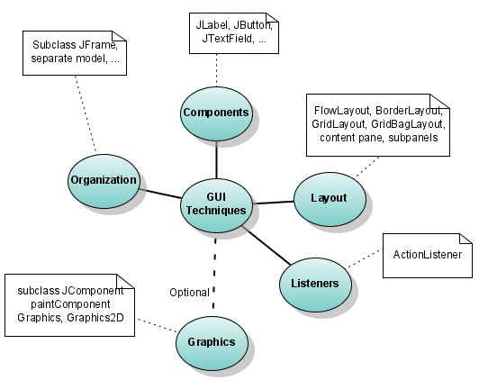

GUI 1 - Introduction
- Explain the scope of this tutorial.
- Point advanced user to the Commentary.
- Contrast read-compute-write with event-driven programming.
Summary. This is an introduction to writing Graphical User Interfaces (GUIs). You will be able to do many programming projects after reading this tutorial. The tutorial presents model programs of increasing capability.
Overview of GUI skills to learn

These first GUI lessons cover only some of these topics: the only layout that is covered is FlowLayout, and Graphics is ignored.
Prerequisites. Your should have a basic understanding of expressions, if statements, classes, and methods. If you're taking a programming course, this should fit comfortably in the middle of learning Java. Basic graphical user interfaces don't depend on arrays, collections, or exceptions.
Many choices for how to proceed
The price of flexibility. Java's flexibility provides an experienced programmer with many alternative GUI styles. However, choices are a problem for the beginner because only a few are good, and many lead to unhappiness.
Dog house requires little skill. When you're building something small, almost any approach works. For example, to build a dog house, you don't need clear plans, can easily correct mistakes, etc. Building a house requires more skills and the use of good techniques. A good dog-house builder isn't necessarily going to be good at building houses, much less office buildings.
Goal is more than a dog house. This tutorial keeps simple things simple, but teaches techniques which scale up to house size. You'll be able to build substantial programs using these skills. The Java equivalent of commercial buildings requires techniques which are beyond the scope of this tutorial.
This first section will teach you all basic elements of GUI programming. The second section (not yet written) will expand on all aspects so that you'll be able to build fairly large GUI programs.
Commentary
When you build your first GUI programs, imitate the examples. Eventually you will want to know why certain choices were made and about alternatives. Or perhaps you've seen different ways presented in text books and wonder if they are better, worse, or just different. Or you already know how to build GUI interfaces, but question the choices here. To answer these questions after you understand how to build GUIs, read the GUI Commentary pages listed in the table of contents.
Read-compute-write versus event-driven programming
Read-compute-write. Most programmers start with a common idea for programming: read input data, process the input data, write the output data. This is often be done in a loop to process more than one set of input data. The essential mindset is that the programmer is in control at all times. This is a very useful paradigm, but GUI programming requires you to change your thinking, and to give up this feeling of total control. It may feel uncomfortable at the beginning, but you'll get used to it.
Giving up control - Event-driven programming. The GUI programming style is referred to as event-driven programming. In this style of programming you set up the graphical user interface and initialize things. It appears that the program just stops and sits there doing nothing! There is no input loop; your program isn't trying to read from the user. You, the programmer, have to learn to give up control in two ways. Your program gives control to the GUI system, and you only get control back to when your listeners are called.
At an even higher level, your program has given control to the user. It's the user who selects which of your methods to call by their choice of buttons to click on, menu items to select, etc.
Listeners. When the user clicks a button (or uses another GUI component), an event is sent to listener method. Your job as a programmer is to write a listener method for each component. It's the user, not the programmer, who has control, indirectly choosing methods in your program to execute by interacting with graphical user interface components.